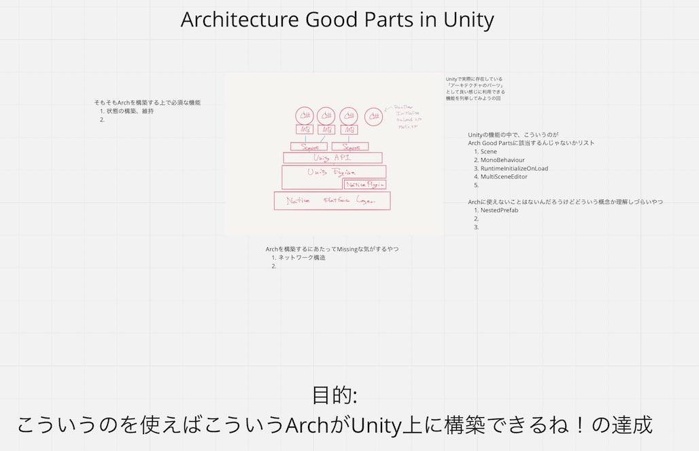

Openに研究中ないろいろ
概要
知りたいこと、やりたいことがいっぱいあって、せっかくなんかリモートが発達したので、「こういう話題をなんかでやる」というのをやっていきたい。
どうするか
どんなテーマがあるか、は以下に描く。が、まず、「どうしようとしてるか」、手段の方を書く。
「思考の過程が残るように」
「コラボレーティブなお絵かきツールの上で」
「適当にうだうだやる」
みたいなのをやってみたいと思っている。
以下、現在俺が保持しているテーマ。
1. UnityにおいてArchtectureを構築するために使えるGood Parts集めてみたくない？
2. まともな非同期 in Unityの研究
これらを、適当に人を募って話したり試したり発展させたり壊したりしていきたい。
具体的にはclubhouseとかになっちゃう気はするんだよなー、編集権渡すんで喋りながらなんかやろうぜ的な。
Twitter Spacesが来たらそっちで。
1. UnityにおいてArchtectureを構築するために使えるGood Parts集めてみたくない？
3rdパーティには本当に色々あるが、
そういえばUnity自体が備え付けで持ってる機能、性質を利用してArchを作ることはできないことなのか？ という疑問がある。
図にするとこういう感じ。

2. まともな非同期 in Unityの研究
UnityではC#がスクリプト言語として使えるんだけど、それがまあかなり、クライアントサイドで使うべき言語としては微妙な非同期の仕様をしている。
これは単に言語とドメインが「だんだん合わなくなってきてる」のだと思っていて、それを直視したい。
で、まずは現状の解析から。ちょうどこういうのが必要な別のやりたいこともあったので、ちょうど良い。
Unityを、特にcaller / callee的な区分けで考えると、だいたいこんな感じの関係がある。
最初の一つのGameObjectはSerializeされた何かから～とか、そういうのは書いてない。
RuntimeInitializeOnLoadとかも例外として扱っている。いや便利なんだけどさ、あとでね。
で、じゃあどういうのを考えると「Unityにおける非同期」において有効なことができるんだろう、
などが、知りたいこと、深掘りしてみたいこと、になっている。
非同期、というトピックにしたが、実際には、分散や並列などを広く含んだ、
「1フレームあたりの計算量を爆上げするには？」
「ユーザー操作がブロックされないようにするには？」
「書きやすくてメンテしやすくて、async汚染などが発生しない方法がつくれないか」
などがある。で、JobSystemやそれを含むDOTSがAnswerとなっているケースもかなりある。
が、模索したいのは「それ以外になにかないか？」なんだよね。あとasync/awaitも、期待してない。
残念なことに、Unityでのasync/awaitは、というかC#でのスレッディングは、基本的に本気で呪われている。
じゃあスレッディングではない場合はなんなんだ？でいうと、それはそれで全く意味がない。本気で意味がない。
そうそう、根本的に、呪いがどうなっていくんだろう、とかも知りたいことではある。
呪いを解くことができるのか、それとも、真面目に戦って勝つことができるのか。
まあ、真面目に戦って勝つべきだ。